Why leaving Emberbrook put the player inside the gate, what the gate actually is, and three candidates for the structure. 2026-08-03.
"when I finish Chapter 1 and leave Ember Brook, I spawn on the overworld behind or somewhere in the middle of the old gates. There are various strange, blocky structures, and I'm not able to get out of that to cross to the road behind it… the structure there doesn't really make sense and needs a better redesign. In doing so, we should make sure that the character spawned clearly after the gate structure and while on the road to Del Hollow so that the player can actually walk down the road."
Two separate defects share one symptom. The arrival is fixed and shipped. The structure is not — this page carries the measurements and three candidates, and it is honest about the one thing none of them solve.
World [-52.174, 26.438, 30.364] — region rx 87.8, ry 69.6.
The Old Gate stands at ry 73.83 and ry increases downstream,
so the shipped arrival was 4.2 units on Emberbrook's own side of the gate it had just come
through, in the court's masonry, with canopy on one hand and blockwork on the other.
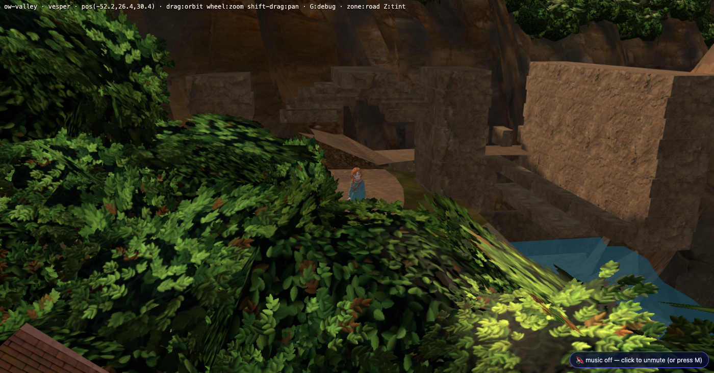
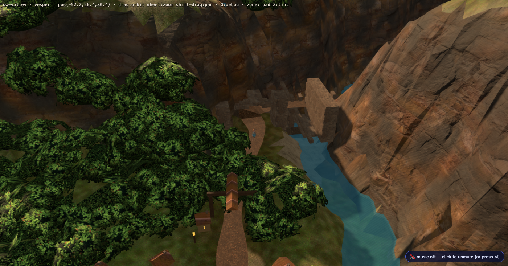
ch2.road diseaseNo raw region coordinate reached a world field. The transform is right and holds on all
three valley portals: world = [rx − 140, ground, 100 − ry], checked
against emberbrook-gate, old-gate and
dellhollow-valley-gate.
tools/scenegraph_derive.mjs backed the region-side arrival off along the road
polyline with for (let k = i; k > 0; k--) — always toward
road[0]. That is right by accident for a portal at a road END (emberbrook-gate
is point 3 of 20 with the town north of it; dellhollow-valley-gate is the last
point) and wrong for a portal in the MIDDLE. The Old Gate is point 9 of 20 with Emberbrook
upstream at point 3, so "toward road[0]" is "back into the town you just left".
| # | what | where |
|---|---|---|
| 1 | Direction, derived not authored: step toward whichever neighbouring road vertex is farther from the target town's anchor. Re-derived, it reproduces the two portals that already worked bit for bit. | scenegraph_derive.mjs |
| 2 | Distance: spawnBackoffU on the portal. The default
(gateRadius 3.2 + spawnBackoff 1.1 = 4.3u) clears a trigger;
the Old Gate is a structure 13.7u deep. It declares 20.0u. |
valley.region.json |
| 3 | The arrival faces the way ON, not back at the door it came out of — seam canon §10's "reads backwards" defect, authored. All three portals were facing backwards; all three now take the road's own tangent in the direction of travel. | scenegraph_derive.mjs |
World [-36.185, 23.294, 17.159], yaw 2.3232,
SIM.zone() = road. Past the whole court, gate behind, gorge ahead.
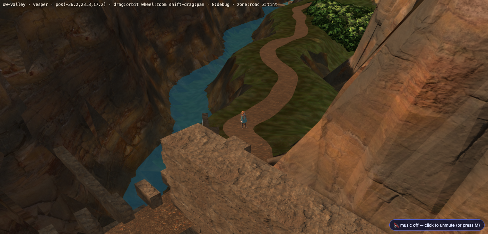
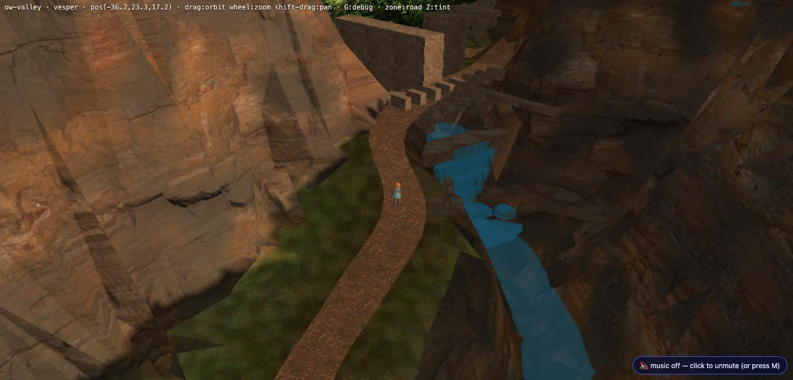
| claim | instrument | result |
|---|---|---|
| the edge is an absence before the flag and live after it | SIM.edges() around GS.setFlags |
open false → true, unchanged spawn |
| the runtime lands the body where the data says | SIM.door('ow-valley','old-gate') |
[-36.185, 23.294, 17.159], yaw 2.3232, zone road |
| a player can walk from there to Dellhollow | play3d's own phys() via SIM.move(), one tick at a time |
1300 ticks, no stall, 1.2u inside the valley-gate trigger |
| the arrival is not inside a camera cut band | derive's arrival-vs-band audit | 20.6u clear (15/15 arrivals clear) |
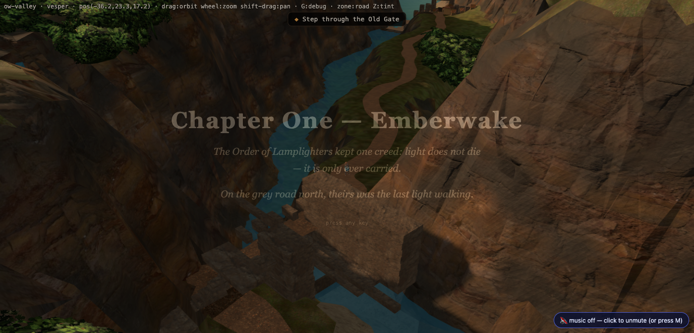
play3d.html, Chapter
One's end card over the frame the player actually arrives in.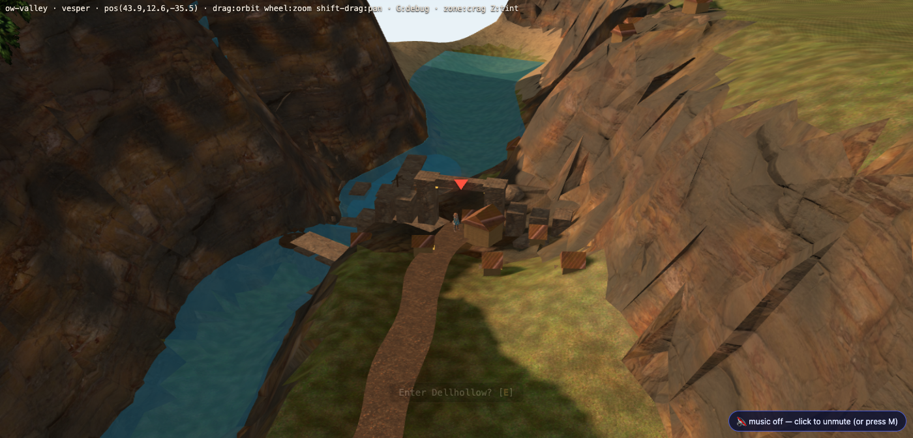
Every number below comes from a flood fill run inside the running page with the
runtime's own primitives — SIM.ground, SIM.blocked, the player's own
0.30 m body box, on a 0.4 m lattice (tools/reach_probe.mjs).
| fill started at | cells filled | reaches Dellhollow? |
|---|---|---|
| the shipped arrival (village side) | 266 945 | no |
| the court's west end, world x −45.4 | 266 947 | no |
| world x −40.5 — the east bank | 11 728 | yes, no edge taken |
| a cell standing ON the court deck | 6 | no |
A fill started on the culvert court's own paving fills six cells — about one square
metre — and stops. The deck is laid at gw[2] − 0.10 and the ground it
meets at either end stands 0.8 m to 1.7 m lower, which is past walkStep's
own 0.8 m step-down. The road runs up to a table it cannot climb onto, and away from a
table it cannot climb off. The two banks are two separate worlds 1.22 m apart.
And the obvious-looking cause was not the cause. The downstream parapet
(valley_build.py) gaps itself only within DOOR*0.75 of
door_c — the arched doorway's offset, which is on the west bank — while the
road leaves the court on the east. That is a real defect and candidate A fixes it. It
moves the walker's frontier 0.8u and no further. Measured before it was built on; the
raft is the wall.
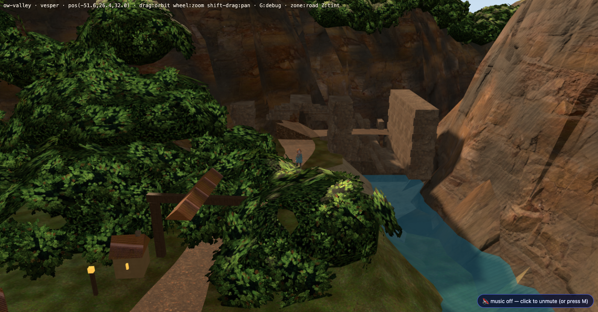
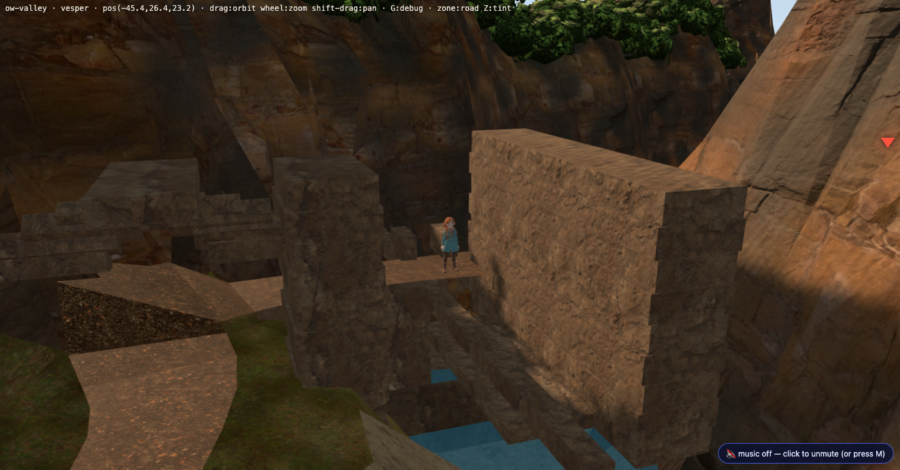
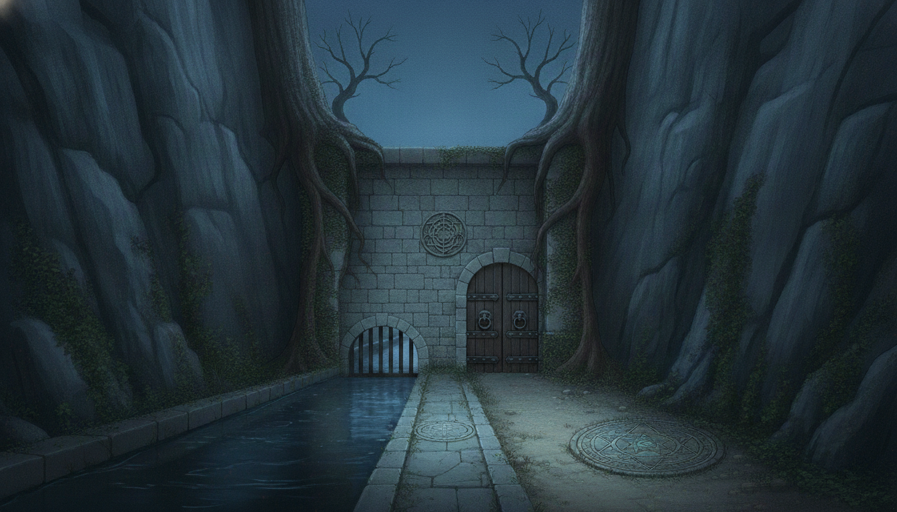
valley_build.py's own docstring.| the concept has | the build has |
|---|---|
| one coursed wall across the notch, capped, reading as a single mass | a run of separate cubes, one per 0.55u course, with a ±0.06u jog — at the overworld boom (dist 40) it reads as a flight of shelves |
| an arched timber double door, studded, iron rings, warm-lit — the single most legible thing in the picture | no leaf at all. Chapter One's climax is this gate opening, and there is nothing here that can be open or shut |
| a low arched grate at water level, water running through | built — 11 bars and a sill lintel |
| a carved sigil roundel over the arch | absent |
| twin sigil plates set in the ground either side of the road | absent — and Chapter One's climax is two keepers standing on them |
| flagstone road with a kerbed water channel beside it | a raft of 9 slabs, a barrel, an arch head, and a parapet across the road's own exit |
| value separation: pale stone, dark timber, black water, moss | tan masonry against tan cliff |
Each is a superset of the one before. Each is lighter than what ships — the user's standing note on the last art round was that a candidate must make the existing thing good rather than add another thing, so the budget here is triangles and every candidate spends fewer of them than today.
| candidate | what it does | triangles | vs shipped | |
|---|---|---|---|---|
| — | base | what ships today | 150 528 | — |
| A | Open the road | the downstream parapet is gapped where the road crosses it, derived from
VM.ROAD_XY, not where the doorway happens to be. Pure subtraction. |
150 492 | −36 |
| B | One wall, not a stack | A, plus the coursed stack collapses to plinth + shaft + coping — three boxes where there were six or seven. Silhouette instead of shelves, and nothing left to stand on. | 150 252 | −276 |
| C | The door and the sigil | B, plus the three marks the concept identifies this gate by: the timber leaf swung back in the arch (it opened in Chapter One and it stays open), the sigil roundel over it, and the twin sigil plates inlaid in the court paving 40 mm proud. | 150 484 | −44 |
Read the last column twice: C adds a door, a roundel and two plates and is still 44 triangles lighter than what ships, because B removed more coursing than C spends.
Untextured on purpose — these are massing candidates, and clay is how you judge a silhouette. The textured frames of the same view are in §1.
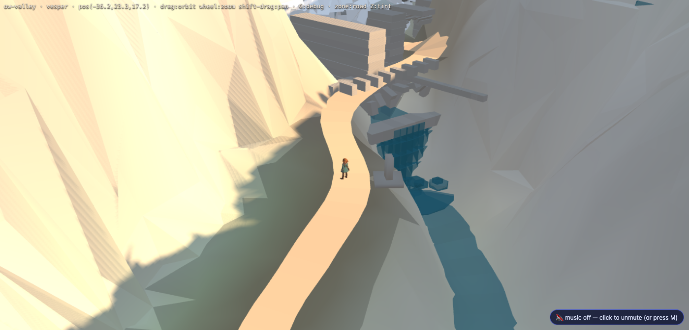
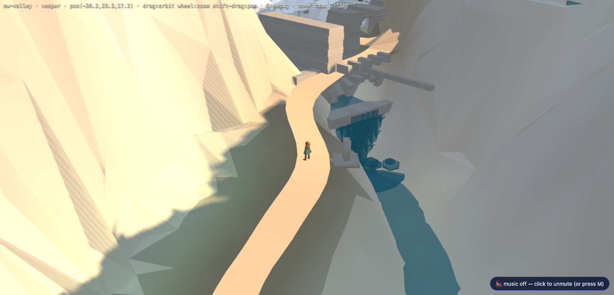
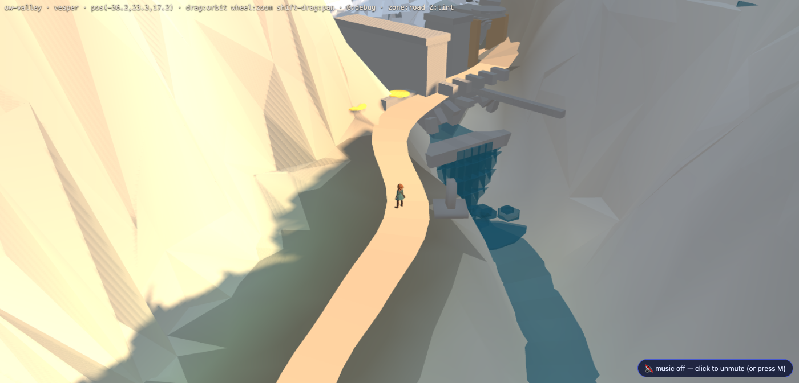
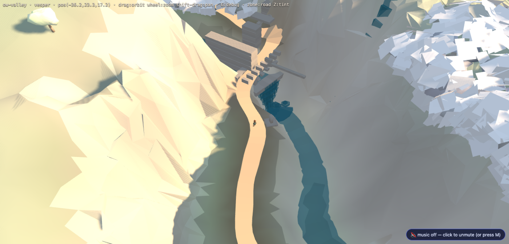
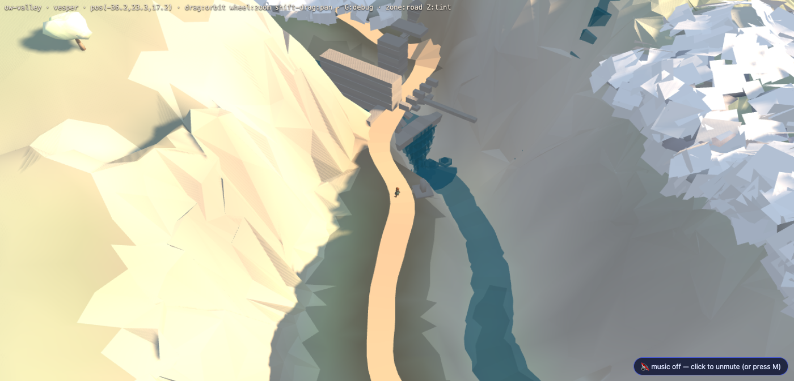
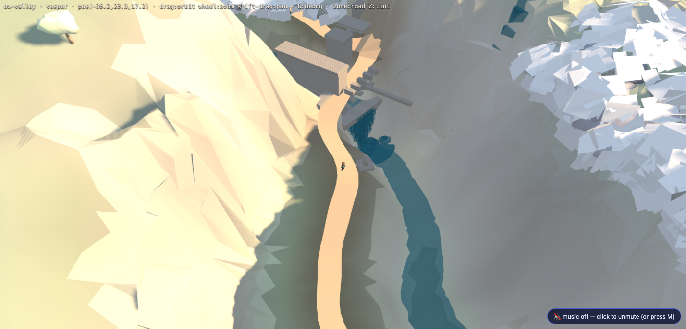
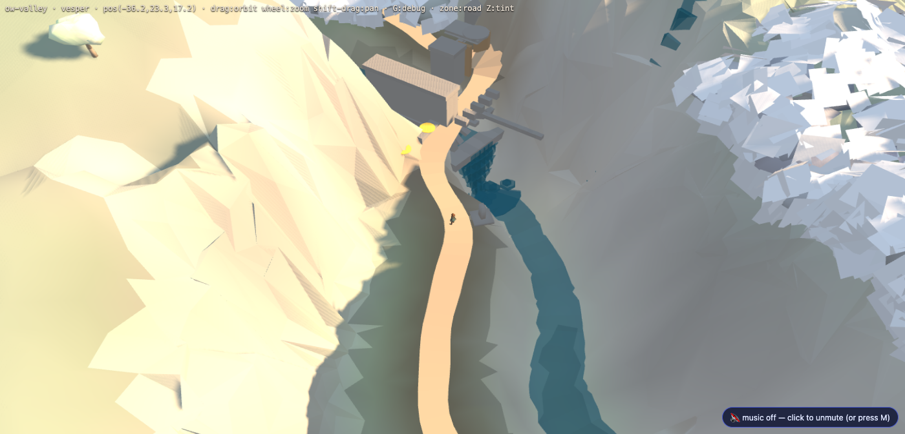
The patch that builds all three is candidates.valley_build.patch
against tools/valley_build.py; the variant is chosen with
OLDGATE=base|A|B|C. Nothing here has been applied to the shipped tile.
All three candidates were re-measured with the same flood fill. None of them opens the court. A, B and C move the walker's frontier from world x −42.4 to −43.2 and stop; the deck's own island stays six cells. The consequence, stated plainly:
valley.region.json;The redesign's real job is therefore not a look: it is a threshold — the deck's two ends let down to the road they meet, in rises under 0.63u, so the court is a piece of the road rather than a table beside it. An apron was tried in this pass and made the island smaller, not larger; it is removed rather than shipped on a guess. Whoever takes this should start from the six-cell number, not from the picture.
Frames: shipped bundle for the textured ones,
worktree builds for the clay. Fills: tools/reach_probe.mjs inside
play.html?scene=ow-valley&rt=1. Walk: SIM.move(), play3d's own
phys().